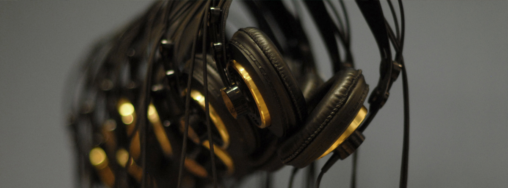

Unternehmen
- Verlag DAS BESTE - Reader's Digest, Stuttgart
- UBM-Records, Berlin
- Montana Media, München
- UNIVERSAL MUSIC Deutschland
- SONY MUSIC ENTERTAINMENT Germany
Klassik
- Jonas Kaufmann
- Diana Damrau
- Eva Lind, Sopranistin
- Martina Dorak, Sopranistin der Volksoper Wien
- Johannes Kalpers
- Volker Bengl
- Schumann Quartett
Jazz
- Fleischer-Jünemann Quartett mit Adam Nußbaum
- Frank Chastenier, Pianist der WDR-Bigband
- Kölner Saxophon Mafia
- Oliver Steller
- Paul Kuhn Bigband
- Peter Herbolzheimer
- Georg Pommer, Zirkus Roncalli
- Willy Ketzer Trio
Sender
- WDR - "Kinderliederwelt", "Super-Wunsch-Hitparade"
- SWR - TV Sendungen "Straße der Lieder" und "Fröhlicher Alltag"
- ZDF - "Lustige Musikanten", "Sonntagskonzert", und diverse andere Sendungen
Pop/Rock/Schlager
- Helene Fischer (mehrere DVD Mischungen)
- Michelle (DVD und CD "The ultimative Best of Live")
- Semino Rossi (DVD und CD "Best of Semino Rossi")
- Bryan Adams (TV Show)
- Rea Garvey (TV Show)
- Heino
- Gotthilf Fischer, Fischerchöre
- Die "Hitfamily" - Stefanie Hertel, Eberhard Hertel, Stefan Mross
- Maria und Margot Hellwig
- Marianne & Michael
- Dirk Schiefen, Trompetensolist
- Gitti und Erika
- Duo Treibsand
- Uschi Bauer
- Jack White Productions
Verschiedene Stilrichtungen
- Lucky Kids, Kinderchor Köln
- Kölner Jugendchor St. Stephan, Ltg.: Michael Kokott
- Berry Lipman Orchestra
- Adrienne Haan - Chansons